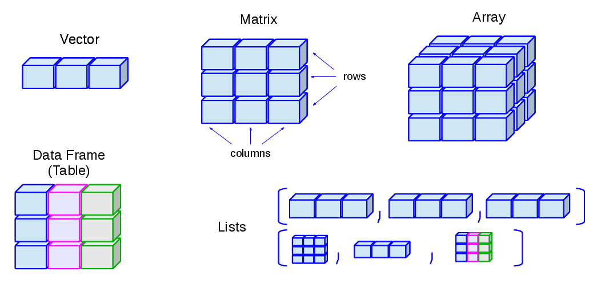
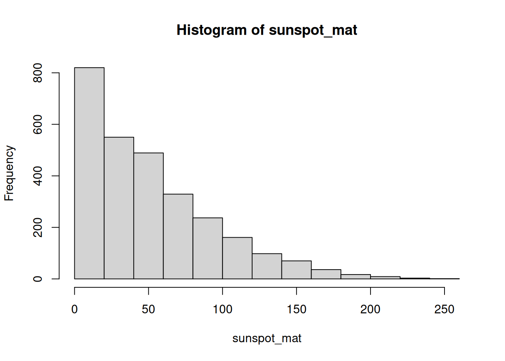
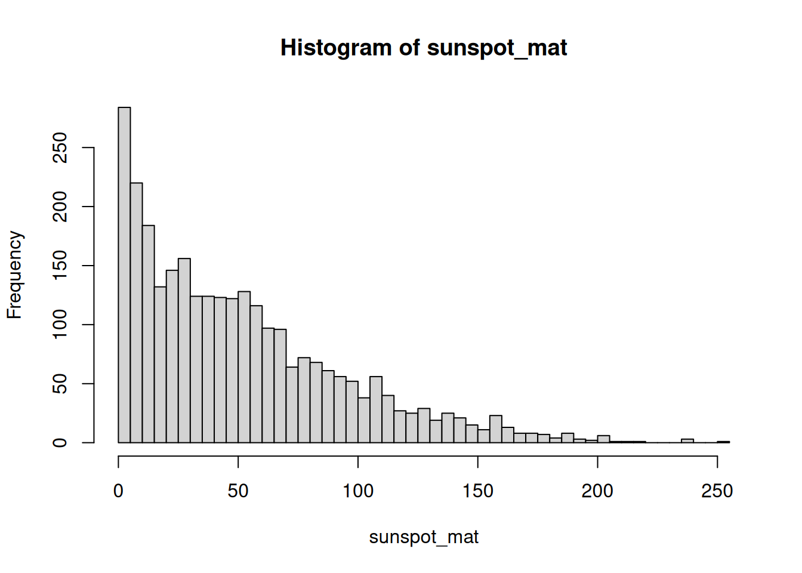

mat1 <- matrix(1:16, nrow = 4)
mat1 [,1] [,2] [,3] [,4]
[1,] 1 5 9 13
[2,] 2 6 10 14
[3,] 3 7 11 15
[4,] 4 8 12 16June 1, 2024
June 2, 2026
Picture the result of a genomics experiment: you measured the activity of twenty thousand genes across a dozen samples. The natural way to hold that is a grid — one row per gene, one column per sample, a number in every cell. That grid is a matrix, and it is the central object you’ll meet again and again in genomics. The gene-expression matrix you build here is the same shape that later powers a SummarizedExperiment, so the moves you learn now pay off for the rest of the book.
A matrix is just a rectangle of values that are all the same type — all numbers, all characters, or all logicals (see Figure 8.1). You can read it as a stack of columns (each column a vector of the same length and type) or as a stack of rows. If you’ve already met vectors, a matrix is the natural next step: take several vectors of equal length and the same type, and line them up side by side.

A data frame is also a rectangle, and it’s easy to confuse the two. The difference is one rule: a matrix needs every value to be the same type, while a data frame lets each column have its own type — numbers in one, text in another. Use a matrix when your whole grid is numeric (like expression values); reach for a data frame when columns mix types (a sample table with names, ages, and treatment labels). The two even name their rows and columns differently under the hood, which is a classic source of confusion — but that’s a problem for the data-frame chapter, not this one.
matrix(), rbind(), and cbind().dim(), nrow(), ncol(), rownames(), and colnames().[row, col] indexing.rowMeans(), colMeans(), and apply() — the per-gene and per-sample summaries you’ll use constantly in genomics.There are many ways to build a matrix in R. The most direct is the matrix() function. Below we pour the numbers 1:16 into a four-row grid.
mat1 <- matrix(1:16, nrow = 4)
mat1 [,1] [,2] [,3] [,4]
[1,] 1 5 9 13
[2,] 2 6 10 14
[3,] 3 7 11 15
[4,] 4 8 12 16By default R fills the matrix column by column — walk down the first column, then the second, and so on. If you’d rather fill it row by row, set byrow = TRUE.
mat1 <- matrix(1:16, nrow = 4, byrow = TRUE)
mat1 [,1] [,2] [,3] [,4]
[1,] 1 2 3 4
[2,] 5 6 7 8
[3,] 9 10 11 12
[4,] 13 14 15 16Look closely at where the numbers land. Same sixteen values, same shape, but a completely different arrangement. Whenever you create a matrix from a flat vector, ask yourself which direction it filled.
We can also assemble a matrix from parts by binding vectors together. Let’s make two numeric vectors of length 10.
gene_a <- 1:10
gene_b <- rnorm(10)Both are numeric and both have length 10, so they can sit together in a matrix. rbind() stacks them as rows (think “r for row”):
mat <- rbind(gene_a, gene_b)
mat [,1] [,2] [,3] [,4] [,5] [,6] [,7]
gene_a 1.0000000 2.0000000 3.0000000 4.000000 5.0000000 6.0000000 7.0000000
gene_b -0.6264538 0.1836433 -0.8356286 1.595281 0.3295078 -0.8204684 0.4874291
[,8] [,9] [,10]
gene_a 8.0000000 9.0000000 10.0000000
gene_b 0.7383247 0.5757814 -0.3053884The companion function cbind() glues vectors together as columns:
mat <- cbind(gene_a, gene_b)
mat gene_a gene_b
[1,] 1 -0.6264538
[2,] 2 0.1836433
[3,] 3 -0.8356286
[4,] 4 1.5952808
[5,] 5 0.3295078
[6,] 6 -0.8204684
[7,] 7 0.4874291
[8,] 8 0.7383247
[9,] 9 0.5757814
[10,] 10 -0.3053884Notice that R kept the vector names — gene_a and gene_b — as labels. Row and column names are worth their weight in gold once they carry real meaning, like gene identifiers or sample names. You can read them back at any time:
And you can set them by assigning a vector of valid names:
[1] "control" "treated"mat control treated
[1,] 1 -0.6264538
[2,] 2 0.1836433
[3,] 3 -0.8356286
[4,] 4 1.5952808
[5,] 5 0.3295078
[6,] 6 -0.8204684
[7,] 7 0.4874291
[8,] 8 0.7383247
[9,] 9 0.5757814
[10,] 10 -0.3053884Every matrix also knows its own shape. dim() reports rows then columns; nrow() and ncol() pull out one each.
Indexing a matrix works like indexing a vector, except now you give two coordinates: the row first, then the column. The pattern is mat[r, c], where r and c say which rows and columns you want.
In R, the first element, row, or column is number 1 — not 0. If you’ve written Python, C, or Java, this will trip you up, because those languages count from 0. Reaching for the wrong starting index is one of the most common beginner mistakes, and the worst kind: it often doesn’t error, it just quietly hands you the wrong value.
Let’s pull various pieces out of mat:
# the value in row 1, column 2
mat[1, 2] treated
-0.6264538 # the entire first ROW (leave the column slot empty)
mat[1, ] control treated
1.0000000 -0.6264538 # the entire first COLUMN (leave the row slot empty)
mat[, 1] [1] 1 2 3 4 5 6 7 8 9 10Leaving a slot blank means “give me all of them.” So mat[1, ] is the whole first row and mat[, 1] is the whole first column. There’s one more form worth knowing — a single index with no comma:
# every value greater than 4; note: no comma
mat[mat > 4][1] 5 6 7 8 9 10When you index with a single subscript and no comma, R forgets the rectangle and treats the matrix as one long vector, returning a flat result. That’s handy for “give me all the big values,” but it’s also a trap: code that looks like it should respect rows and columns may silently flatten your matrix instead. Whenever you mean a row or a column, include the comma.
You can also exclude rows or columns by prefixing the index with a minus sign:
mat[, -1] # drop the first column [1] -0.6264538 0.1836433 -0.8356286 1.5952808 0.3295078 -0.8204684
[7] 0.4874291 0.7383247 0.5757814 -0.3053884mat[-c(1:5), ] # drop the first five rows control treated
[1,] 6 -0.8204684
[2,] 7 0.4874291
[3,] 8 0.7383247
[4,] 9 0.5757814
[5,] 10 -0.3053884Let’s make a fresh matrix of random values to experiment on — pretend it’s a small expression matrix with measurements drawn from a normal distribution.
V1 V2
Min. :-2.21470 Min. :-1.989352
1st Qu.:-0.03775 1st Qu.:-0.397561
Median : 0.49187 Median : 0.009218
Mean : 0.24884 Mean :-0.133673
3rd Qu.: 0.91318 3rd Qu.: 0.569355
Max. : 1.51178 Max. : 0.918977 Arithmetic on a matrix behaves much like arithmetic on a vector. Multiplying by a single number scales every cell at once:
# multiply every value by 20
expr2 <- expr * 20
summary(expr2) V1 V2
Min. :-44.294 Min. :-39.7870
1st Qu.: -0.755 1st Qu.: -7.9512
Median : 9.837 Median : 0.1844
Mean : 4.977 Mean : -2.6735
3rd Qu.: 18.264 3rd Qu.: 11.3871
Max. : 30.236 Max. : 18.3795 By combining subsetting with assignment, you can rewrite just part of a matrix. Here we bump up only the first column:
# add 100 to the first column of expr2
expr2[, 1] <- expr2[, 1] + 100
summary(expr2) V1 V2
Min. : 55.71 Min. :-39.7870
1st Qu.: 99.25 1st Qu.: -7.9512
Median :109.84 Median : 0.1844
Mean :104.98 Mean : -2.6735
3rd Qu.:118.26 3rd Qu.: 11.3871
Max. :130.24 Max. : 18.3795 A common reshaping move is to transpose — flip rows into columns and vice versa with t(). You’ll need this surprisingly often: a lab instrument might write samples in rows and genes in columns, while Bioconductor expects genes in rows and samples in columns. One call sets it right.
t(expr2) [,1] [,2] [,3] [,4] [,5] [,6] [,7]
[1,] 130.23562 107.79686 87.57519 55.70600 122.49862 99.101328 99.67619
[2,] 18.37955 15.64273 1.49130 -39.78703 12.39651 -1.122575 -3.11591
[,8] [,9] [,10]
[1,] 118.87672 116.424424 111.878026
[2,] -29.41505 -9.563001 8.358831For this section we need a matrix to play with. We’ll use rnorm() again, but ask for values centered at 5 with a standard deviation of 2 — the two extra arguments are the mean and the spread.
Because these values come from a normal distribution centered at 5, any single column (or row) should have a mean near 5 and a standard deviation near 2. Let’s check the first column, then the first row:
mean(expr3[, 1])[1] 5.24146sd(expr3[, 1])[1] 1.617129# now a row
mean(expr3[1, ])[1] 5.319228sd(expr3[1, ])[1] 2.047589Computing one summary at a time gets tedious fast. R gives you convenience functions that sweep across all the rows or all the columns at once. In a gene-expression matrix, rowMeans() is the average expression per gene and colMeans() is the average per sample — two of the most common summaries in genomics.
colMeans(expr3) [1] 5.241460 5.268273 5.286914 5.902420 4.504528 5.254721 5.224683 5.694960
[9] 4.760354 4.987658rowMeans(expr3) [1] 5.319228 5.055767 6.074298 4.394364 4.717785 5.863346 4.492896 5.169545
[9] 5.225423 5.813319rowSums(expr3) [1] 53.19228 50.55767 60.74298 43.94364 47.17785 58.63346 44.92896 51.69545
[9] 52.25423 58.13319colSums(expr3) [1] 52.41460 52.68273 52.86914 59.02420 45.04528 52.54721 52.24683 56.94960
[9] 47.60354 49.87658We can save the column means and look at how they’re spread:
Min. 1st Qu. Median Mean 3rd Qu. Max.
4.505 5.047 5.248 5.213 5.282 5.902 Notice the column means cluster tightly around 5 — exactly the center we asked for when we built the matrix. The averaging smooths out the noise in the individual values.
What about the standard deviation of each column? There’s no built-in colSd(), but you don’t need one. The apply() function takes any function that works on a vector — like sd() — and applies it across either dimension: 1 means rows, 2 means columns.
Min. 1st Qu. Median Mean 3rd Qu. Max.
1.192 1.261 1.610 1.672 1.990 2.577 These per-column standard deviations sit close to 2, the spread we built in. Keep apply() in your back pocket: any time R lacks a ready-made rowX() or colX(), apply() lets you roll your own.
The number in apply(x, MARGIN, FUN) is the dimension you keep: 1 for rows (one result per row), 2 for columns (one result per column). A quick way to remember: it matches the order in [row, column] — 1 is rows, 2 is columns.
For these exercises we’ll use a dataset that ships with R: monthly sunspot counts from 1749 to 1983. It arrives as a ts (time series) object, so the code below reshapes it into a matrix with one row per year and one column per month. Just run it as written and move on to the questions.
data(sunspots)
sunspot_mat <- matrix(as.vector(sunspots), ncol = 12, byrow = TRUE)
colnames(sunspot_mat) <- as.character(1:12)
rownames(sunspot_mat) <- as.character(1749:1983)Get to know the matrix. What does sunspot_mat look like? Find its number of rows, its number of columns, and some basic summary statistics.
nrow(sunspot_mat)[1] 235ncol(sunspot_mat)[1] 12dim(sunspot_mat)[1] 235 12summary(sunspot_mat) 1 2 3 4
Min. : 0.00 Min. : 0.00 Min. : 0.00 Min. : 0.00
1st Qu.: 14.60 1st Qu.: 15.65 1st Qu.: 14.80 1st Qu.: 16.55
Median : 40.60 Median : 44.00 Median : 45.60 Median : 41.00
Mean : 49.11 Mean : 51.17 Mean : 50.04 Mean : 51.00
3rd Qu.: 70.00 3rd Qu.: 74.50 3rd Qu.: 72.25 3rd Qu.: 75.30
Max. :217.40 Max. :182.30 Max. :190.70 Max. :196.00
5 6 7 8
Min. : 0.00 Min. : 0.00 Min. : 0.00 Min. : 0.00
1st Qu.: 19.65 1st Qu.: 15.55 1st Qu.: 16.30 1st Qu.: 16.55
Median : 41.30 Median : 40.50 Median : 41.90 Median : 40.70
Mean : 52.48 Mean : 51.55 Mean : 51.47 Mean : 52.07
3rd Qu.: 76.80 3rd Qu.: 80.95 3rd Qu.: 76.85 3rd Qu.: 73.70
Max. :238.90 Max. :200.70 Max. :191.40 Max. :200.20
9 10 11 12
Min. : 0.00 Min. : 0.00 Min. : 0.00 Min. : 0.00
1st Qu.: 14.60 1st Qu.: 16.60 1st Qu.: 14.75 1st Qu.: 17.25
Median : 42.70 Median : 43.80 Median : 40.50 Median : 41.20
Mean : 52.28 Mean : 51.86 Mean : 50.64 Mean : 51.51
3rd Qu.: 77.00 3rd Qu.: 71.50 3rd Qu.: 68.45 3rd Qu.: 74.70
Max. :235.80 Max. :253.80 Max. :210.90 Max. :239.40 head(sunspot_mat) 1 2 3 4 5 6 7 8 9 10 11 12
1749 58.0 62.6 70.0 55.7 85.0 83.5 94.8 66.3 75.9 75.5 158.6 85.2
1750 73.3 75.9 89.2 88.3 90.0 100.0 85.4 103.0 91.2 65.7 63.3 75.4
1751 70.0 43.5 45.3 56.4 60.7 50.7 66.3 59.8 23.5 23.2 28.5 44.0
1752 35.0 50.0 71.0 59.3 59.7 39.6 78.4 29.3 27.1 46.6 37.6 40.0
1753 44.0 32.0 45.7 38.0 36.0 31.7 22.2 39.0 28.0 25.0 20.0 6.7
1754 0.0 3.0 1.7 13.7 20.7 26.7 18.8 12.3 8.2 24.1 13.2 4.2dim() confirms 235 years by 12 months, and head() shows the first few years — always eyeball the shape before you start computing.
Practice subsetting by pulling out: the first 10 years (rows), the month of July (the 7th column), and the single value for July 1979 using the row name to select it.
sunspot_mat[1:10, ] 1 2 3 4 5 6 7 8 9 10 11 12
1749 58.0 62.6 70.0 55.7 85.0 83.5 94.8 66.3 75.9 75.5 158.6 85.2
1750 73.3 75.9 89.2 88.3 90.0 100.0 85.4 103.0 91.2 65.7 63.3 75.4
1751 70.0 43.5 45.3 56.4 60.7 50.7 66.3 59.8 23.5 23.2 28.5 44.0
1752 35.0 50.0 71.0 59.3 59.7 39.6 78.4 29.3 27.1 46.6 37.6 40.0
1753 44.0 32.0 45.7 38.0 36.0 31.7 22.2 39.0 28.0 25.0 20.0 6.7
1754 0.0 3.0 1.7 13.7 20.7 26.7 18.8 12.3 8.2 24.1 13.2 4.2
1755 10.2 11.2 6.8 6.5 0.0 0.0 8.6 3.2 17.8 23.7 6.8 20.0
1756 12.5 7.1 5.4 9.4 12.5 12.9 3.6 6.4 11.8 14.3 17.0 9.4
1757 14.1 21.2 26.2 30.0 38.1 12.8 25.0 51.3 39.7 32.5 64.7 33.5
1758 37.6 52.0 49.0 72.3 46.4 45.0 44.0 38.7 62.5 37.7 43.0 43.0sunspot_mat[, 7] 1749 1750 1751 1752 1753 1754 1755 1756 1757 1758 1759 1760 1761
94.8 85.4 66.3 78.4 22.2 18.8 8.6 3.6 25.0 44.0 51.0 66.0 94.1
1762 1763 1764 1765 1766 1767 1768 1769 1770 1771 1772 1773 1774
33.8 54.2 30.0 27.0 3.3 21.9 52.6 118.6 109.8 67.7 77.3 27.7 17.5
1775 1776 1777 1778 1779 1780 1781 1782 1783 1784 1785 1786 1787
1.0 1.0 95.0 153.0 143.0 86.0 73.5 37.0 32.2 6.0 36.3 83.0 128.0
1788 1789 1790 1791 1792 1793 1794 1795 1796 1797 1798 1799 1800
141.5 117.0 69.3 71.0 45.8 50.0 41.0 12.9 26.9 4.3 0.0 2.1 21.0
1801 1802 1803 1804 1805 1806 1807 1808 1809 1810 1811 1812 1813
35.0 48.0 48.3 29.8 37.6 30.0 12.7 6.7 0.3 0.0 6.6 0.5 18.3
1814 1815 1816 1817 1818 1819 1820 1821 1822 1823 1824 1825 1826
18.5 35.5 38.8 50.0 28.0 31.4 20.6 2.5 7.9 0.5 0.0 30.9 52.5
1827 1828 1829 1830 1831 1832 1833 1834 1835 1836 1837 1838 1839
42.9 54.3 90.8 43.9 45.2 13.9 7.0 8.7 59.8 116.7 162.8 108.2 84.7
1840 1841 1842 1843 1844 1845 1846 1847 1848 1849 1850 1851 1852
60.7 30.8 12.6 9.5 21.2 30.6 46.5 52.2 139.2 78.0 39.1 36.1 42.0
1853 1854 1855 1856 1857 1858 1859 1860 1861 1862 1863 1864 1865
45.9 18.7 0.4 4.6 22.2 56.7 95.2 116.7 78.0 73.4 32.7 54.7 26.8
1866 1867 1868 1869 1870 1871 1872 1873 1874 1875 1876 1877 1878
9.3 5.0 28.6 59.2 132.4 103.0 105.5 66.9 67.8 12.5 15.2 5.9 0.1
1879 1880 1881 1882 1883 1884 1885 1886 1887 1888 1889 1890 1891
7.5 21.9 76.9 45.4 80.6 53.1 66.5 30.3 23.3 3.1 9.7 11.6 58.8
1892 1893 1894 1895 1896 1897 1898 1899 1900 1901 1902 1903 1904
76.8 88.8 106.0 47.8 45.0 27.6 9.0 13.5 8.3 0.7 0.9 27.9 50.6
1905 1906 1907 1908 1909 1910 1911 1912 1913 1914 1915 1916 1917
73.0 103.6 49.7 39.5 35.8 14.1 3.5 3.0 1.7 5.4 71.6 53.5 119.8
1918 1919 1920 1921 1922 1923 1924 1925 1926 1927 1928 1929 1930
107.6 64.7 27.5 41.9 10.9 3.5 28.1 38.5 52.3 54.9 98.0 70.2 21.9
1931 1932 1933 1934 1935 1936 1937 1938 1939 1940 1941 1942 1943
17.4 9.6 2.8 9.3 33.9 52.3 145.1 165.3 97.6 67.5 66.9 17.7 13.2
1944 1945 1946 1947 1948 1949 1950 1951 1952 1953 1954 1955 1956
5.0 42.6 116.2 157.9 142.2 125.8 91.0 61.5 39.3 8.6 4.8 26.7 129.1
1957 1958 1959 1960 1961 1962 1963 1964 1965 1966 1967 1968 1969
187.2 191.4 149.6 121.7 70.2 21.8 19.6 3.1 11.9 56.7 91.5 96.1 96.8
1970 1971 1972 1973 1974 1975 1976 1977 1978 1979 1980 1981 1982
112.5 81.0 76.5 23.1 55.8 28.2 1.9 21.4 70.4 159.4 136.3 143.8 106.1
1983
82.2 sunspot_mat["1979", 7][1] 159.4Because we set row names, you can index by the label "1979" instead of counting rows — far less error-prone than figuring out which row number that is.
Whole-matrix summaries. A function that expects a vector — like max() — will happily treat the whole matrix as one long vector. What is the highest monthly sunspot count in the data?
And the minimum?
Center of the data. What are the overall mean and median?
See the shape of the data. Use hist() to look at the distribution of all the monthly counts.
hist(sunspot_mat)
The long right tail confirms the skew we suspected from the mean and median: most months are quiet, a handful are very busy.
Sharpen the histogram. Read about the breaks argument to hist() and use it to increase the number of bars for more resolution.
hist(sunspot_mat, breaks = 40)
More breaks means narrower bars, which reveals finer structure in the distribution.
Average by month. We’d like the mean number of sunspots for each month of the year. Which summary function gives a result per column?
colMeans(sunspot_mat) 1 2 3 4 5 6 7 8
49.11191 51.17489 50.04085 51.00298 52.47830 51.54936 51.46553 52.06511
9 10 11 12
52.28170 51.86468 50.64170 51.51447 # apply() does the same thing:
apply(sunspot_mat, 2, mean) 1 2 3 4 5 6 7 8
49.11191 51.17489 50.04085 51.00298 52.47830 51.54936 51.46553 52.06511
9 10 11 12
52.28170 51.86468 50.64170 51.51447 Months are the columns, so colMeans() (or apply(..., 2, mean)) gives one average per month.
Summarize the monthly means. Save the per-month averages to a variable and summarize it to see the spread across months.
Average by year. Now play the same game across rows to get one mean per year.
Min. 1st Qu. Median Mean 3rd Qu. Max.
0.00 16.15 43.05 51.27 70.41 189.85 Years are the rows, so rowMeans() collapses each year to a single average.
Look for a pattern. Plot the yearly means. Do you see anything?
You can now treat a matrix as the workhorse rectangle it is:
matrix(), or assemble it from vectors with rbind() and cbind().dim(), nrow(), ncol(), rownames(), and colnames().mat[row, col] — remembering R counts from 1, that a blank slot means “all,” and that a single index with no comma flattens the matrix to a vector (Section 8.3).t().rowMeans(), colMeans(), and the more general apply() — the per-gene and per-sample summaries at the heart of genomics.That last idea — genes in rows, samples in columns, summaries running in either direction — is exactly the mental model you’ll carry into the SummarizedExperiment chapter, where a matrix like this becomes the beating heart of a real genomics container.